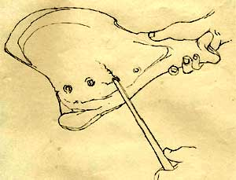

|

The bones were used by the kings of ancient China as tools to find out about the future. Pits were bored into the bones. A diviner would then ask a question on behalf of the king, for example 'Will we have a good harvest this year?' A hot poker was applied to the pits in the bone. The heat from the poker would make the bone crack. Depending on what side of the bone the crack appeared, the diviner would know if the answer to the question was 'yes' or 'no'. The answers to the question, and the date, were then written on the bone.Historians and archaeologists gathered lots of useful information from the oracle bones. They discovered the names of nearly all of the Shang kings. They also found out what things were important to the kings. |